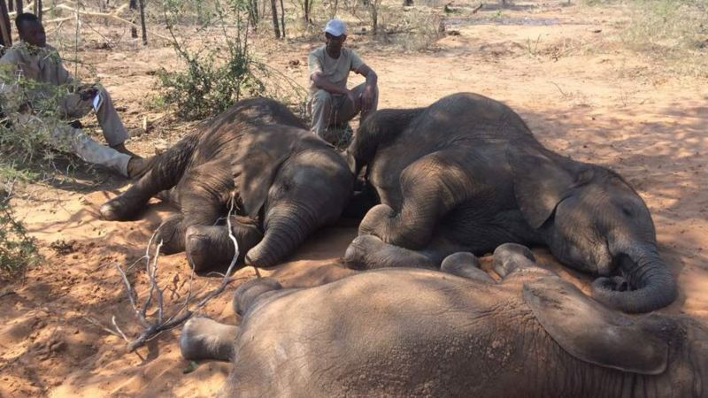
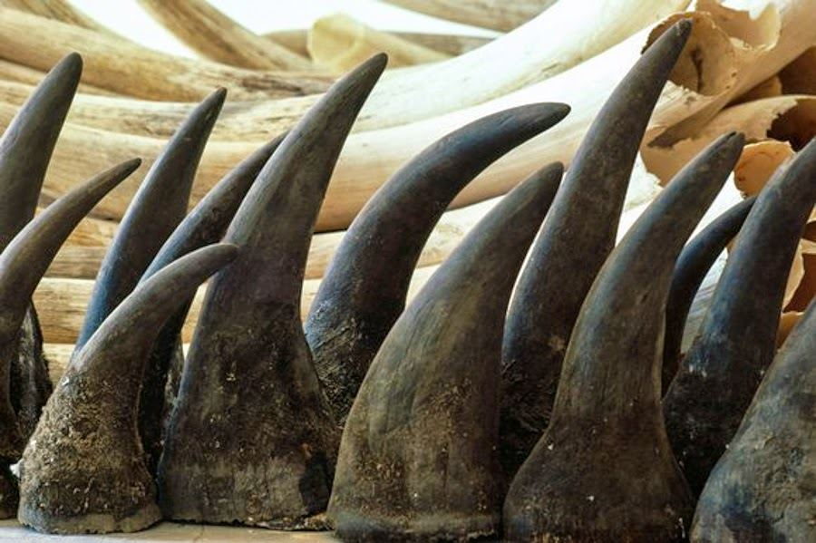

불법밀렵은 다양한 동물과 식물에 적용되고 있다.
이를 방지하기 위해 많은 국가에서는 동식물 보호법을
시행하고 있지만 그럼에도 불법밀렵은 매년 많은 사례가
발생하고 있다.
그 사례로는 다음 5가지가 있다.
1. 코끼리 엄지 손가락 수집
코끼리의 엄지 손가락은 보석등의 재료로 사용되는 경우가 있다. 이를 위해 코끼리를 사냥하고 엄지 손가락을 베어내는 일이 일어나고 있다
2. 코뿔소의 뿔 수집
코뿔소의 뿔은 중국에서 중국 전통 의학에 사용되는 보약으로 인기가 있다. 그래서 코뿔소를 사냥하여 뿔을 수집하는 일이 일어나고 있다.
3. 앵무새 밀렵

앵무새도 애완용으로 인기가 많은데, 이를 위해 앵무새를 사냥하여 밀매하는 사례가 있다.
4. 고릴라 밀렵

고릴라는 멸종위기종으로서 보호받고 있지만, 그에 대한 수요는 여전히 높다. 고릴라를 사냥하여 밀매하는 일이 많다.
5. 희귀 야생동물 밀집 지역 밀렵

희귀 동물들이 많이 서식하는 지역에서는 불법적인 사냥과 밀집 지역의 목재를 수집하는 일이 잦다.
불법밀렵은 인간의 이기심과 탐욕 때문에 일어나는 문제이다. 하지만 이러한 문제를 해결하기 위해 국제적으로 다양한 노력과 제도가 마련되고 있다. 예를 들면, 협약을 통한 동·식물 보호, 불법밀수물 검거를 위한 국제 경찰 협력 등이 있다.